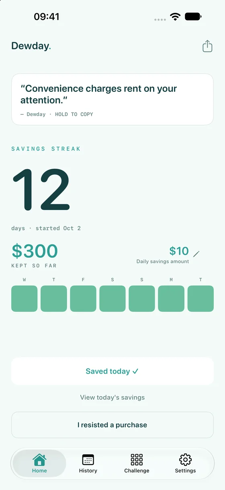
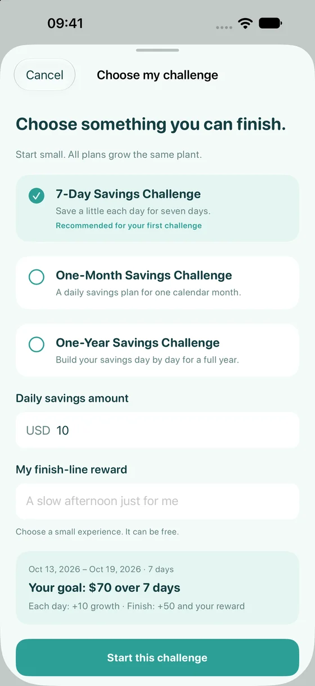

Check in on no-spend days
Record no spending, essentials only, or other spending. Use the calendar to see streaks or correct a past entry.
iPhone · iOS 17 or later
Check in when you avoid extra spending, note a purchase you skipped, and grow a virtual plant while you work on a savings challenge.
No bank connection or developer account required.

Start with a daily check-in or choose an amount to set aside yourself.
Record no spending, essentials only, or other spending. Use the calendar to see streaks or correct a past entry.
Choose seven days, one calendar month or one calendar year. Set a daily amount and a personal reward.
Record something you chose not to buy and what it would have cost. Share progress cards and earn virtual growth as you go.
For example, set a personal target of $5 a day for seven days and set the money aside yourself. Record each day in Dewday and watch your plant grow.

No. You enter spending choices and amounts yourself. The estimated amount kept is a record, not a bank balance.
Yes. Review and edit past check-ins in the calendar.
After the initial 24 hours, continued use is available through a subscription or an optional completed share to unlock the current day. Historical records remain viewable.